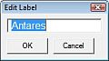
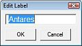
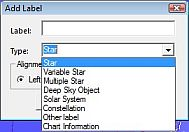
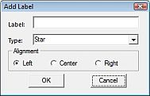

Labels
De selectie van de te tonen labels
Je kunt in Cartes du Ciel/Sterrenkaarten de automatische weergave van labels instellen via Instellingen → Weergave → Labels.
Ook kun je het font-type instellen, de fon-grootte, kleur en welke objecten dat gelabeld moeten worden.
Voor sterren en sterrenbeelden kun je instellen met welk soort informatie het programma het label van informatie zal voorzien.
Het bewerken van labels
 Om labels te kunnen bewerken, moet je de “Bewerk label” modus op “aan” zetten met het
Om labels te kunnen bewerken, moet je de “Bewerk label” modus op “aan” zetten met het  icoontje. En vergewis je ervan dat de weergave van labels op de kaart aan staat door te controleren dat het
icoontje. En vergewis je ervan dat de weergave van labels op de kaart aan staat door te controleren dat het  icoontje 'ingedrukt' staat. Klik vervolgens met de rechter muisknop op het label dat je wilt bewerken. Een pop-up venster verschijnt, het geeft je de volgende mogelijkheden:

icoontje 'ingedrukt' staat. Klik vervolgens met de rechter muisknop op het label dat je wilt bewerken. Een pop-up venster verschijnt, het geeft je de volgende mogelijkheden:

{kind=link}
- Verplaats label verandert de muis-cursor in een kruisje, door de muis te bewegen verplaats je het label over de kaart tot je een linker muisklik op de kaart doet.
- Bewerk label er verschijnt een nieuw venster dat je de mogelijkheid geeft om nieuwe tekst in te voeren.
- Standaard label Herstelt het label naar zijn originele inhoud en plaats.
- Verberg label Precies wat het probeert uit te drukken.
- Reset alle labels maak alle label wijzigingen ongedaan.
Als je meer wilt lezen over de pop-up vensters van de kaart, klik hier.
Om meer te lezen over de automatische weergave van labels, lees dit.
Nieuwe labels toevoegen
Om een nieuw label toe te voegen moet je eerst een pop-up venster oproepen via een rechter klik op een object of ergens op de kaart.
  In dit venster, klik op de regel “Nieuw label”. Het volgende dialoogvenster opent zich met de volgende items:
{kind=link}
{kind=link}
- Label is een invoergebied waar je de weer te geven tekst van het label kunt ingeven. .
- Type is een combo-box waar je het type van het te labelen object kunt instellen.
- Uitlijning is a radio-knoppengroep waarmee je de positionering van het label bij het object kunt bepalen.